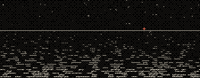
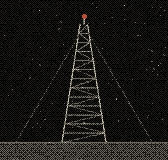
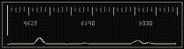
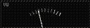
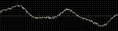

The card came up at 0412 and held for nine minutes. Same card. Same crooked
registration mark, bottom left, which means it is the same tape, which means
nothing has been replaced up there since before I started writing any of this
down.
I keep a log of when it appears. There is no pattern in the log. I have looked
for one the way you look for a light switch in a room you grew up in.
Ｎｉｇｈｔｓｉｄｅ
-operator
11.09.25

New page in the dir. It writes a shipping forecast for
coastlines nobody ever surveyed, reads it out if you ask it to, and then forgets
it. Open it twice and you get two different seas.
I wrote it because the real forecast stopped being read at the hour I am usually
awake, and I wanted something to be said out loud at that hour.
Ｓｎｏｗ
-operator
??.??.25
Channel four, all night, no complaints received.
Ｒｅｌａｙ ｎｉｎｅ， ｓｔｉｌｌ ｗａｒｍ
-operator
02.28.25

Drove out to the site. The gate was open and the chain had been cut a long
time ago, judging by the rust on the cut. Grass through the hardstanding. A
clipboard on a nail with nothing on it.
The hut is warm. Not warm like sun on a roof — warm like something inside it
is drawing power. I could not find what. The meter outside has been at the same
reading in both photographs I have of it, four years apart, so either it is
broken or nothing is being used, and the hut is still warm.
The lamp on top blinks at about forty a minute. It is supposed to be thirty.
Nobody is coming to fix that.
Ｎｕｍｂｅｒｓ， ４６２５
-operator
07.31.24
Built a thing that reads five-digit groups over the drone, the way they used
to be read: numbers. Voice is whatever your machine
has. Mine sounds like a man being polite at gunpoint.

The groups are not decoration. They carry one word. The format is on the page.
The offset is not on the page — it is in the manual, where an offset is supposed
to be, under a heading that sounds like it is about something else.
If you get the word out, it is the word the login wants. That is the whole
arrangement. Nobody has told me they finished it.
Ｓｏｍｅｏｎｅ ｒｅｔｕｎｅｄ ｉｔ
-vhf
06.03.24

operator gave me the keys to this page for one night so here is my one night.
Sat on 4625 for six hours the way you do. Half past two it moved. Not faded —
moved, about nine kilohertz, and the buzz came back in a slightly different
buzz, and then twenty minutes later it moved back.
You cannot retune a transmitter that nobody is at. I have been telling myself
that all week and it has not helped, so I am telling all of you instead.
Thanks for the page. Give it back now.
Ｄｅａｄ ｌｅｔｔｅｒ
-operator
03.??.24
A postcard came to the site address, which is not an address, from a town I
cannot find. Nothing on it but a frequency and the time, and on the back, in
small careful handwriting, in a language I had to look up:
まだ聞こえていますか。
こちらはもう誰もいません。
それでも、毎晩つけています。
Roughly: can you still hear this. there is no one here any more. all the
same, I switch it on every night.
I have read it enough times that I no longer know whether it was addressed to
me or forwarded through me. I put it in the tin with the other things I have not
thrown away.
Ｓｃｏｐｅ
-operator
??.??.24
Put an oscilloscope on the site. Move the pointer
and you move the ratio between the two axes; where the ratio is a small whole
number the figure stands still, and where it is not, it drifts forever.
Whole numbers are rarer than you would think. That is most of what a scope
ever taught me.
Ｗａｖｅｆｏｒｍ ｏｆ ｎｏｔｈｉｎｇ
-operator
05.22.22

Forty minutes of the channel with nothing on it, drawn out flat. It is not a
flat line. Nothing is never a flat line. There is the mains in there, and the
heating, and the sea, and something at about eleven hertz that I have decided
not to identify.
Ｔｈｅ ｓｈａｐｅ ｉｔ ｍａｋｅｓ
-operator
10.07.23
Someone wrote in to say the site is depressing. It is not. A room with the
light left on is not depressing. It is only depressing if you decide the person
who left it on is not coming back, and I have never once said that.
Anyway I fixed the thing where the nav wrapped badly on a phone.
Ｆｏｒｅｃａｓｔ ｆｏｒ ｐｌａｃｅｓ ｔｈａｔ ａｒｅ ｎｏｔ ｔｈｅｒｅ
-operator
??.??.21
Sea areas I have written down over the years without ever finding them on a
chart: Corvid. Lint. Haar. Slattern Deep. Bight of Nine.
An east German list I copied out of a notebook at a rally, which I am told
means storm warning, all stations, do not answer:
Sturmwarnung. Alle Stationen. Nicht antworten.
I do not think any of them are real. I have started using them anyway, because
a forecast for nowhere still tells you what kind of night it is.
Ｆｉｒｓｔ ｌｉｇｈｔ
-operator
12.03.19
Put this up so I would have somewhere to keep the recordings. It is four pages
and a directory and none of it is finished.
I am not going to explain the name. If you found the site by looking for the
kind of thing this is, you already know what dead air is, and you already know
it is not silence.